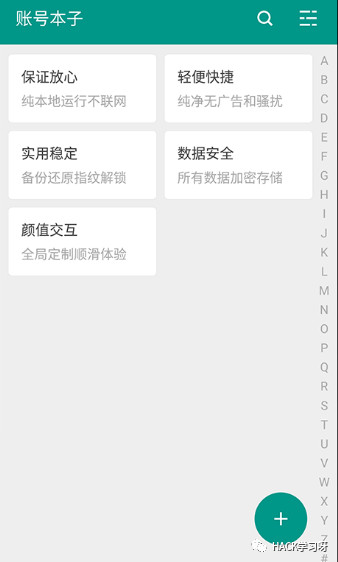
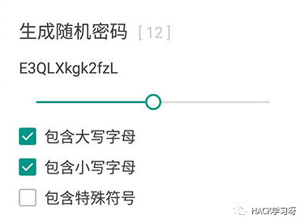
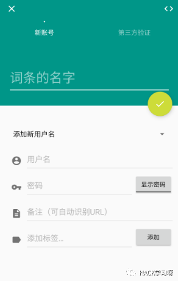
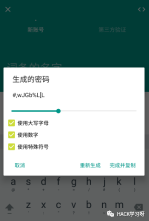

密码太多记不住？密码相同怕撞库？试试这几款软件吧

你的支付宝支付密码、你的草榴登陆密码、你的指纹、你的银行卡号和取款密码。从本质上来说，这些都是秘密。这些秘密对你来说意义重大：因为无法和对方面对面，所以只要你能说出这个秘密，对方就承认“你是你”。
讲真，你和你的秘密相处，从来没有如此剑拔弩张。有一个坏消息：你要记忆的密码多如牛毛，还有一个更坏的消息，随着年龄增长，你的记忆越来越差。
如果你胆敢在所有平台使用相同的密码，那么一旦你的信息在一个平台上泄露，黑市里立刻可以出现你所有平台的信息。在解决这件事上，无疑是存在商机的。做这件事的思路似乎只有一个，那就是把密码统一管理起来。
例如“洋葱令牌”，他们在做的事情就是把你的密码统统装进一个箱子，由专人来掌管，你只需要用密码或者指纹或者你的脸开启洋葱就好。
这里推荐看到几款手机APP用来存放密码的看着还不错就推荐给大家看看提提意见了
1、账号本子 是一款 Android 上的单机版密码管理器，数据本地加密保存、支持指纹解锁、生成随机密码、搜索、自动备份等功能

安全担忧一直是那些自带网络储存与同步功能的密码管理器的软肋，总有各种意外发生。
账号本子 是一款 Android 上的，不需要网络权限的简易密码管理器，它能够生成随机密码：

可以将数据库导入/导出为 CSV 文件（导出 CSV 的数据是未加密的），或者使用内置备份功能进行备份（此备份文件加密）。
对于大量密码管理，账号本子支持首字母排列检索以及模糊匹配搜。
指纹功能支持 Android 原生、魅族 SDK 以及 三星 SDK，能不能用需要看手机。
2、Passport是在酷安发现的一款密码存储管理器，酷安点评：Passport是来自酷友的一款私人数据管理应用，权限很干净，界面采用质感设计，可设置指纹解锁进入。

软件介绍：Passport是一个保存个人帐号密码的app，采用Material设计和先进的加密技术，致力保证您的隐私

还在为了反社工而每个账号都是用不用的密码吗？Passport可以为您记录您的各个账户，同时还向您提供随机密码生成器。
Passport非常安全，甚至没有网络权限，个人资料可以备份至SD卡，支持指纹加密等策略。
3、XyKey是一款简洁易用的帐号密码管理工具，通过可靠的加密技术帮助用户加密并且管理重要账号的密码数据。

XyKey首次进入要设置主密码，设置完成后就可以开始添加账号了。从上图中我们可以看到，需要添加的信息非常明确，我们只需按照相应提示依次填入即可。
对于密码方面，XyKey可以将你原来的密码生成一个复杂的不重复的密码，不但能够对你的原密码进行更好的保护，还能增强密码的强度和安全性。
全部设置完成后，就可以完成该账号的添加了。按照这个流程可以依次将你的账号进行添加，添加完成的账号可以在首页进行查看。
主页显示的账号除了可以进行查看、编辑和删除外，还能进行诸如复制账号、复制密码、跳转URL等复杂选项。
XyKey支持使用源数据进行密码的备份与还原，不但操作简单实用而且相对安全。
不少用户会担心密码安全性的问题，XyKey本身不具备联网功能，只会将数据存储在本地，大家不必担心它会偷偷的上传信息
总结
任何事情都是相对的，保持良好健康的上网习惯也是保护密码和隐私的必要途径之一

上述APP均可从正规的手机应用商城App中下载
这里就不放下载地址了
对了苹果手机的密码管理软件推荐：
https://itunes.apple.com/cn/app/id1250363981
来源：https://www.ercc.cc/311.html